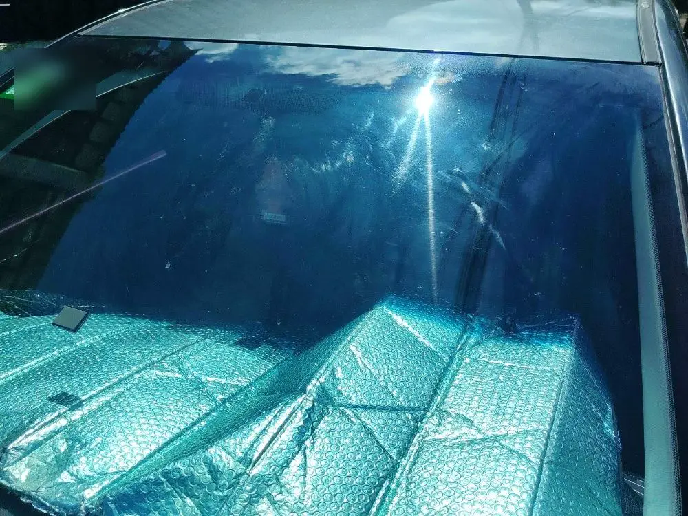
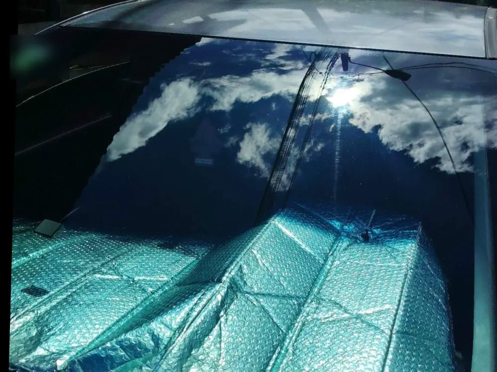
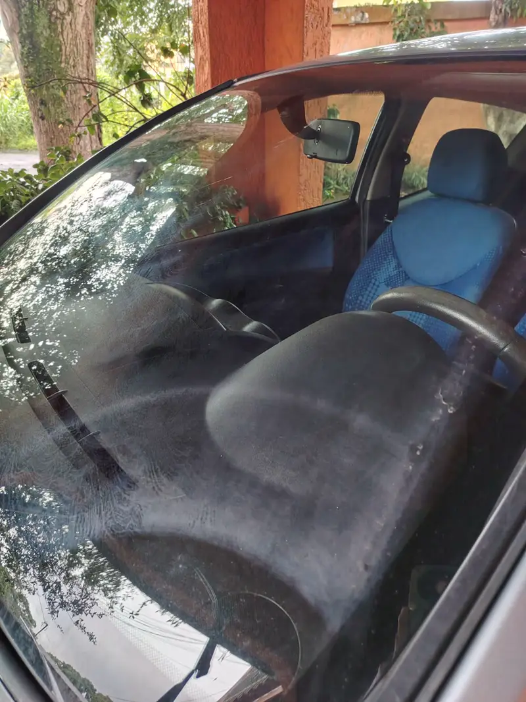
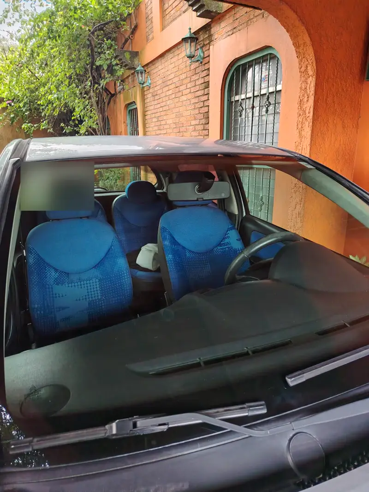
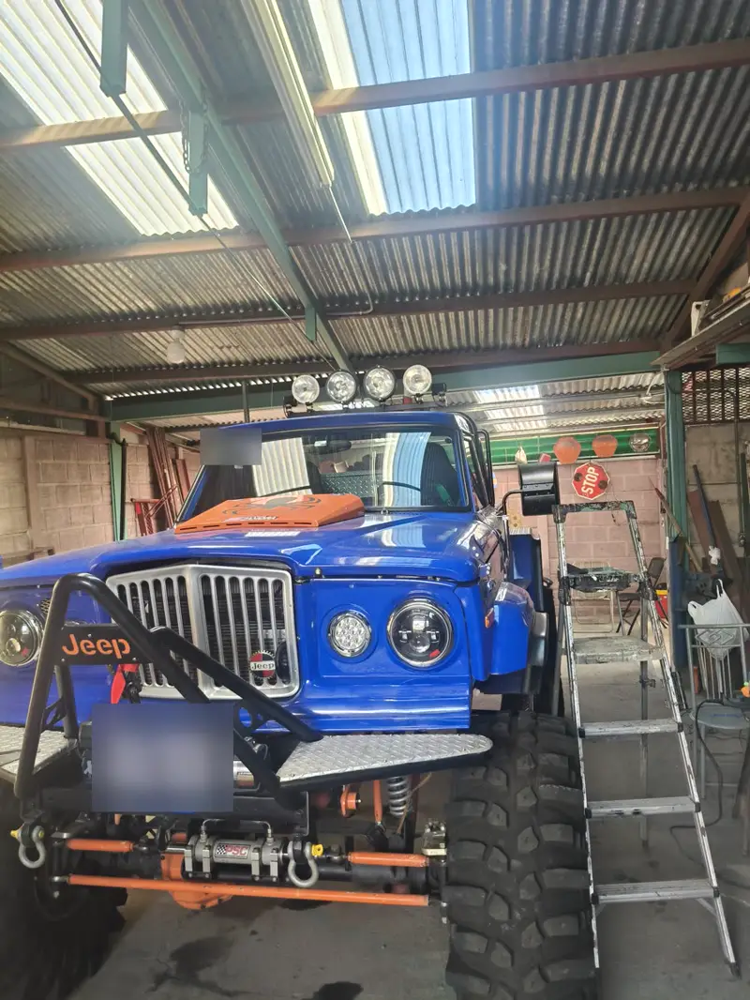
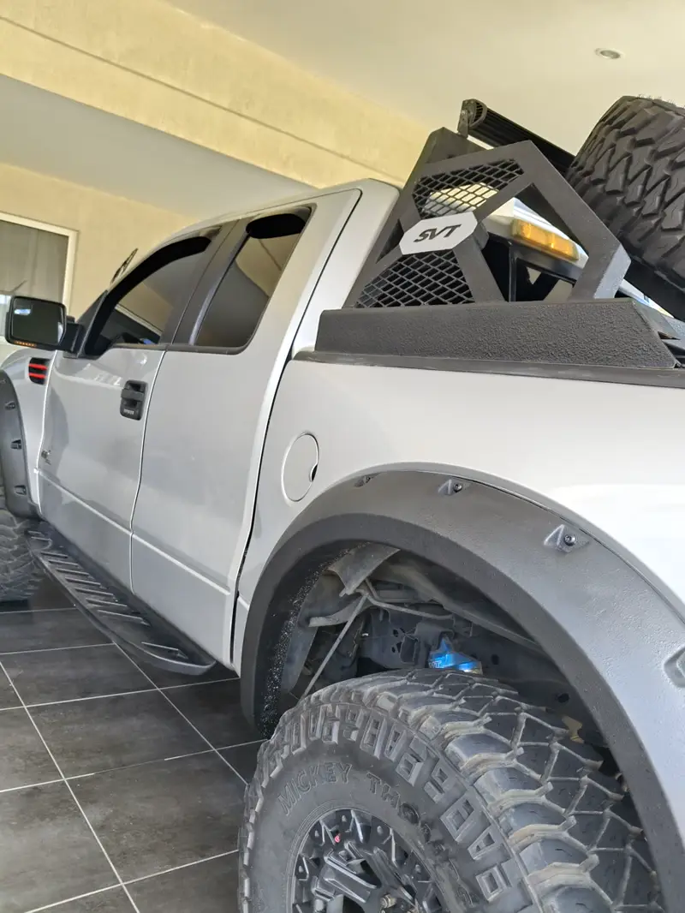
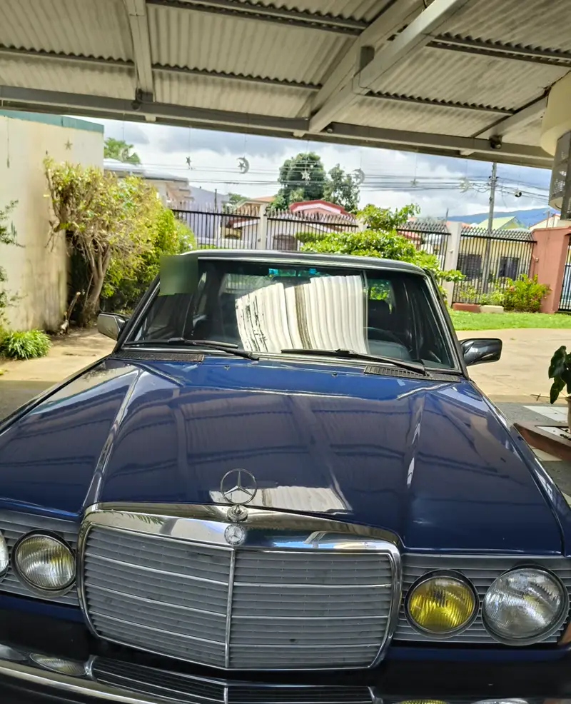
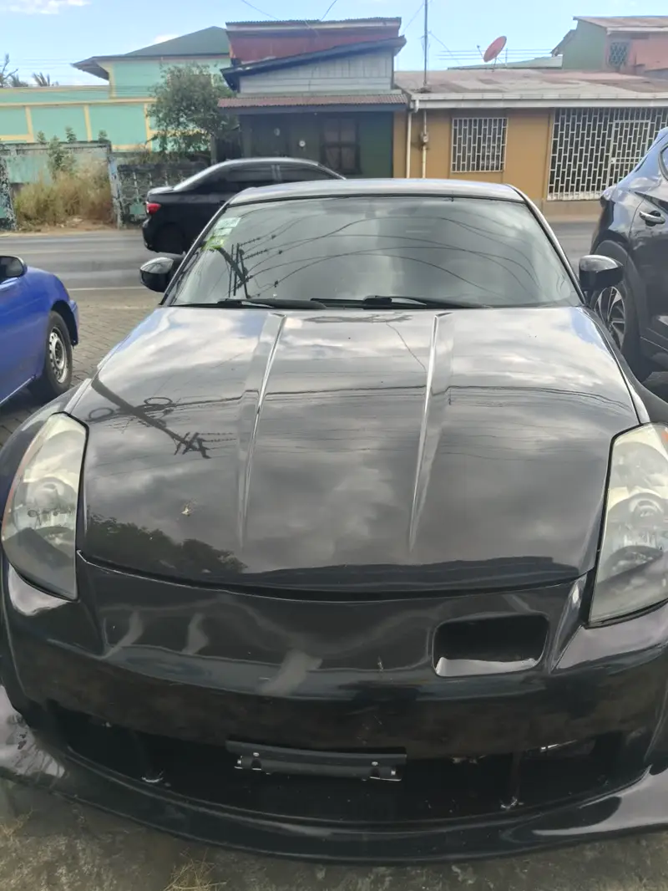

Gota seca que no sale
Puntos blancos de agua y minerales pegados. Ni con jabón ni con limpiavidrios se van.
Quitamos gota seca, lluvia ácida, hongos y micro rayones de tus vidrios y focos. Vamos a tu casa o trabajo y lo dejamos como de fábrica.
Promo: parabrisas a ₡25 000 y te regalamos el vidrio trasero y los retrovisoresSedán o SUV, mismo precio y mismo regalo · solo agendando desde la páginaElegís servicio, día y hora. Sin llamadas ni mensajes.


Deslizá · trabajo real de GlassStudioCR
Lo que eliminamos de tus vidrios
El lavado normal no lo quita: son minerales y daños incrustados en los poros del vidrio.
Puntos blancos de agua y minerales pegados. Ni con jabón ni con limpiavidrios se van.
La lluvia ácida dispersa la luz de los otros carros y te encandila.
El agua se queda pegada en vez de resbalar, justo cuando más necesitás ver.
Si chillan o saltan, la superficie ya no es lisa. Hay que descontaminar el vidrio.
Marcas finas y hongos que opacan el vidrio y se notan con el sol.
Iluminan menos y hacen ver el carro viejo. Los pulimos y sellamos con polímero líquido.
Fotos de nuestros propios trabajos, carro por carro.

Antes
Después



Sin escribir ni esperar respuesta: elegís tu servicio, el día y la hora libre, y listo. Te llega la confirmación.
Servicio
Día
Hora libre
Ilustración del proceso de reserva
Domicilio gratis en San José, Heredia y Alajuela.
En 1 minuto elegís servicio, día y hora libre. Sin llamadas.
Óxido de cerio, polish para vidrios y máquinas rotativas, sin deformar el vidrio.
Protección cerámica para que la lluvia resbale y el brillo dure meses.
No tenemos local: trabajamos en tu casa, en el parqueo de tu trabajo o donde lo tengás.
San José, Heredia y Alajuela
Cartago, Tres Ríos, Grecia y alrededores
San Ramón, Orotina, Puriscal y Zarcero
“Muy buen servicio al cliente, me quedaron como nuevo.”
“Excelente trabajo. Recomendados y servicio al cliente.”
“Excelente servicio y atención, ¡muchas gracias!”
“Recomendado al 100 %.”
No tenemos local: el servicio es 100 % a domicilio. Vamos a tu casa, trabajo o donde tengás el carro, y el traslado es gratis en San José, Heredia y Alajuela.
Alrededor de 1 hora por carro. Al agendar en línea solo te mostramos las horas que tenemos libres.
Eliminamos gota seca, lluvia ácida, hongos, manchas y micro rayones. Si un rayón es profundo, lo revisamos antes de empezar y te decimos con honestidad si se puede restaurar.
El sellador hace que la lluvia resbale y que el brillo dure meses. Para que te dure más, evitá lavar los vidrios con productos abrasivos.
No. El pulido del parabrisas con protección cerámica cuesta ₡25 000, sea sedán, hatchback, SUV o pick-up.
Sí. Quitamos lo amarillo y opaco y los sellamos con polímero líquido. Cuesta ₡20 000 el par y lo podés sumar a cualquier servicio de vidrios.
Elegí tu servicio, el día y la hora. Nosotros llegamos.